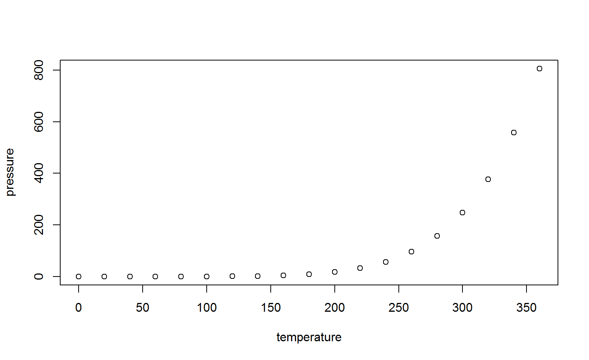

Chris Penfold
“Could you just re-run this with…”
This is an R Markdown presentation. Markdown is a simple formatting syntax for authoring HTML, PDF, and MS Word documents. For more details on using R Markdown see http://rmarkdown.rstudio.com.
When you click the Knit button a document will be generated that includes both content as well as the output of any embedded R code chunks within the document.
## speed dist
## Min. : 4.0 Min. : 2.00
## 1st Qu.:12.0 1st Qu.: 26.00
## Median :15.0 Median : 36.00
## Mean :15.4 Mean : 42.98
## 3rd Qu.:19.0 3rd Qu.: 56.00
## Max. :25.0 Max. :120.00
An R Notebook is a special execution mode of R Markdown with two characteristics that make it very useful for communicating results (from https://www.r-bloggers.com/communicating-results-with-r-markdown/:
| PROBLEM | COMMON TOOL | BETTER TOOL |
|---|---|---|
| Share reports and presentations | Microsoft Office | R Markdown |
| Summarize and share your interactive analyses | R Scripts | R Notebooks |
Rmarkdown tag - https://stackoverflow.com/questions/tagged/r-markdown